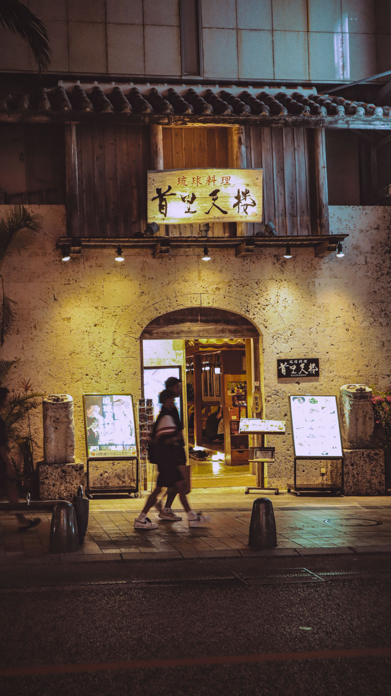
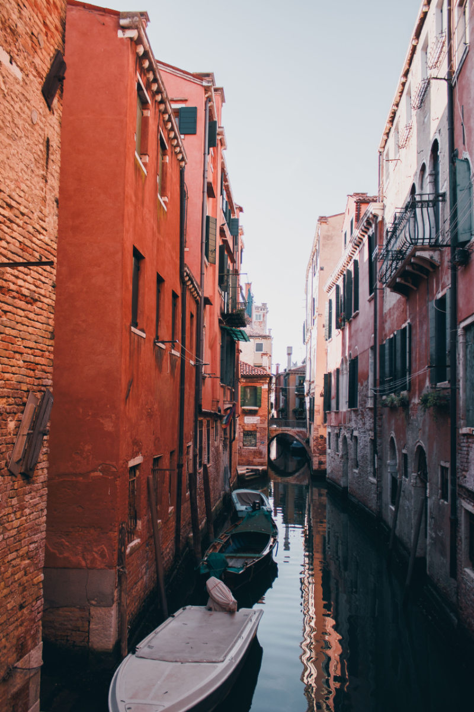

Costa rica has been on my bucket list for a long time. Costa Rica sounds like an amazing place to visit because it has everything I love! I would love to surf the beautiful beaches, hike through the tropical rainforests, explore waterfalls, and see wildlife like monkeys, sloths, toucans, and colorful frogs in their natural habitats. I also want to experience the local culture, meet new people, and try traditional Costa Rican foods like gallo pinto, casado, and fresh tropical fruits. Visiting places like Tamarindo for surfing and Arenal Volcano for hiking and exploring would be incredible. Costa Rica's laid-back Pura Vida lifestyle is something I would love to experience. I enjoy adventure, nature, and learning about different cultures, so Costa Rica is definitely one of my dream travel destinations

Japan is another one of my dream travel destination, specifically Okinawa! Okinawa is known for its beautiful coral reefs, and I would love to go snorkeling, surfing, swimming, and exploring the ocean. I also want to experience Japanese culture, learn about Okinawa's unique traditions, and try delicious local foods like Okinawa soba, fresh seafood, and traditional Japanese dishes. I would love to visit historical castles, hike through lush forests, see waterfalls, and explore the island's natural beauty. What excites me most about Okinawa is the combination of adventure, beautiful beaches, rich history, and a peaceful island lifestyle. It seems like the perfect place to experience a new culture while enjoying everything I love about the outdoors!

Norway is a very special place on my travel bucket list because my dad's parents are from there, and I have family history that I would love to explore. Visiting Norway would give me the opportunity to connect with my roots, learn more about my family's heritage, and experience the culture and traditions that are part of my background. Seeing the beautiful fjords, villages and the Northern Lights are a few things that I want to experience during my visit. I also want to try traditional Norwegian foods, meet the locals, and learn more about the way of life there. Norway is known for its breathtaking landscapes, outdoor adventures, and rich Viking history, which makes it even more exciting to me. More than anything, I would love to visit the places where my family came from and feel a deeper connection to my heritage.

Italy is somewhere I have always dreamt of visiting because of the beautiful scenery, history, amazing food, and unique culture. In Italy, I would love to explore the charming coastal villages, wander through historic cities, visit local markets, and enjoy authentic Italian pasta, pizza, and gelato. I would also love to experience the countryside, hike along the beautiful Amalfi Coast, and learn more about Italian traditions and everyday life.I think visiting Italy would be unforgettable.
